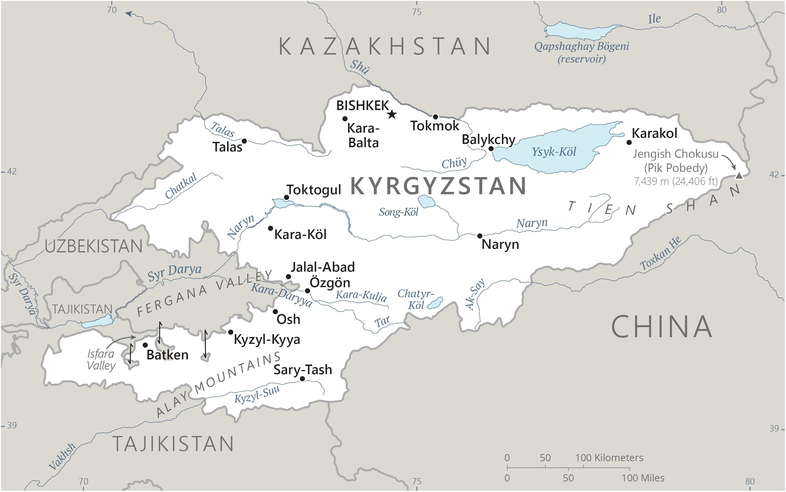

Genel Bilgiler
Kırgızistan, Orta Asya’da yer alan üniter bir cumhuriyettir. Başkenti Bişkek’tir. Yaklaşık 6,6 milyon nüfusa sahiptir. Resmî dili Kırgızca olup Rusça da yaygın olarak kullanılır. Para birimi Kırgız Somu (KGS)’dur. Kırgızistan, dağlık coğrafyası, gölleri ve tarihi İpek Yolu bağlantıları ile bilinir.
Kırgızistan, kuzeyde Kazakistan, doğuda Çin, güneyde Tacikistan ve batıda Özbekistan ile çevrilidir. Yüzölçümü yaklaşık 199.951 km²’dir. Ülke coğrafyası dağlık olup, Tien Shan Dağları ülkenin büyük kısmını kaplar. Issık Göl, ülkenin en büyük ve dünyadaki en büyük tuzlu su göllerinden biridir.
Başkent: Bişkek
Kıta: Asya
Yüzölçümü: 199.951 km²
Nüfus (2025): 6.700.000
Bayrak Anlamı: Kırgızistan bayrağı kırmızı zemin üzerinde sarı bir güneş ve güneşin ortasında 40 ışınlı bir tunduk (geleneksel çadır kubbesi) sembolü içerir. Kırmızı cesareti ve kahramanlığı, sarı güneş refah ve aydınlığı, tunduk ise ulusal kültür ve birliği simgeler. Bayrak 1992 yılında kabul edilmiştir.
Kırgızistan Haritası
Ekonomi
Kırgızistan ekonomisi tarım, madencilik ve hizmet sektörlerine dayanır. Tarımda buğday, mısır, pamuk ve meyve üretimi öne çıkar. Hayvancılık önemli bir geçim kaynağıdır. Sanayi sektöründe gıda işleme, hafif sanayi ve madencilik öne çıkar. Hizmet sektörü, özellikle turizm ve ticaret alanında büyümektedir. Ülke ayrıca hidroelektrik enerji potansiyeli açısından önemlidir.
| Yıl | İhracat (Milyar $) | İthalat (Milyar $) |
|---|---|---|
| 2019 | 1.5 | 6 |
| 2020 | 1.3 | 5 |
| 2021 | 1.8 | 6.5 |
| 2022 | 2 | 7 |
| 2023 | 2.1 | 7.5 |